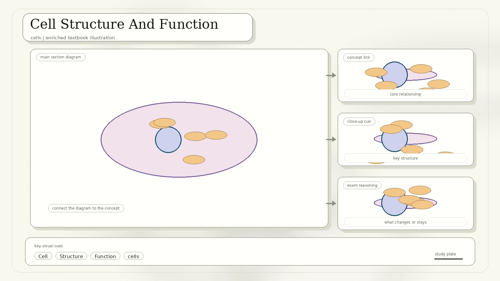
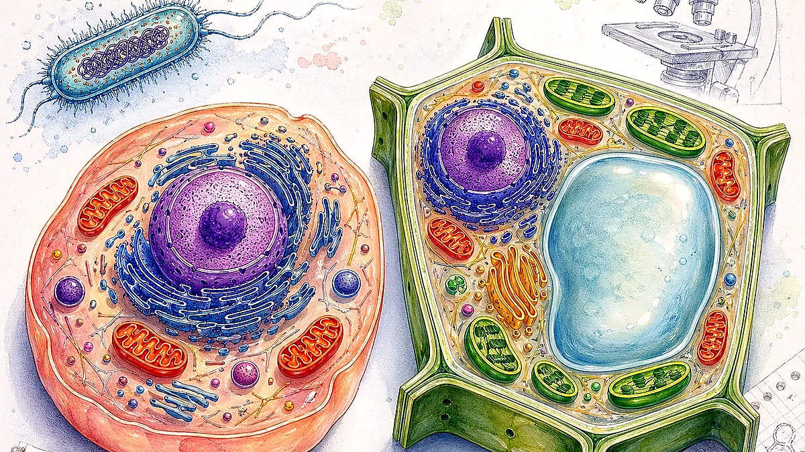
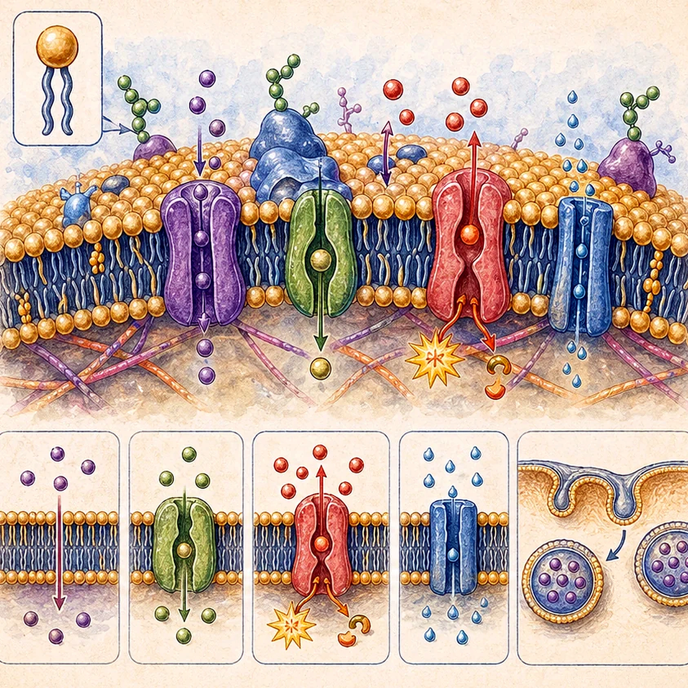
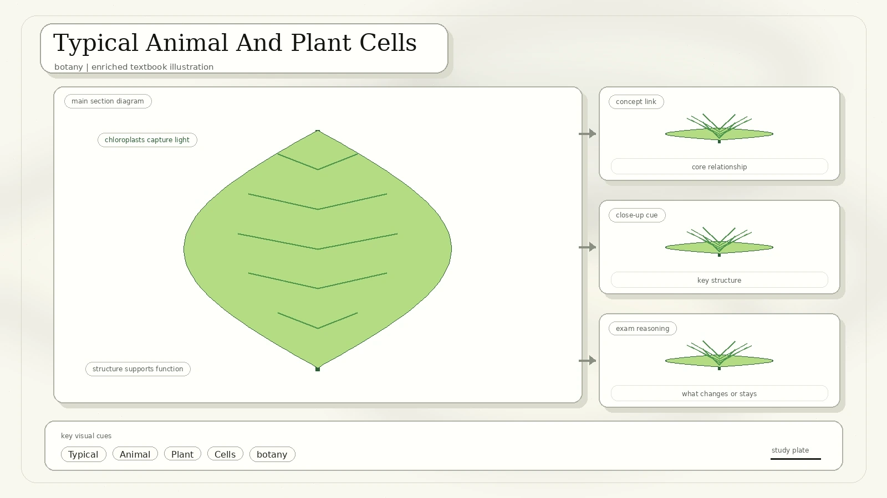
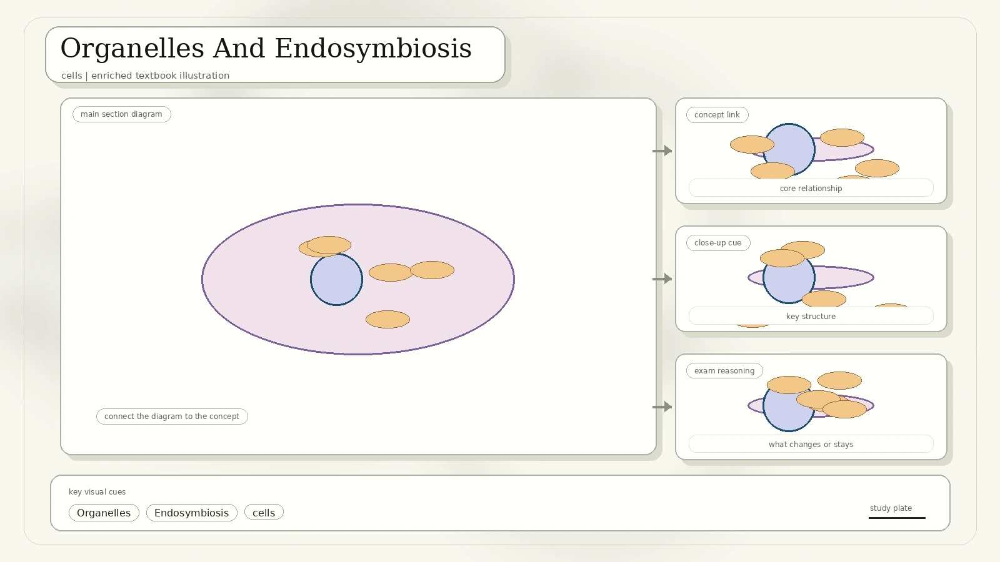
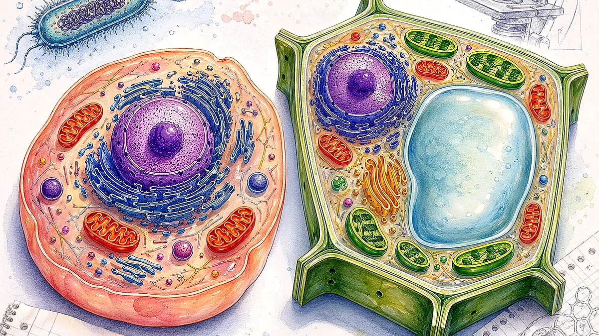
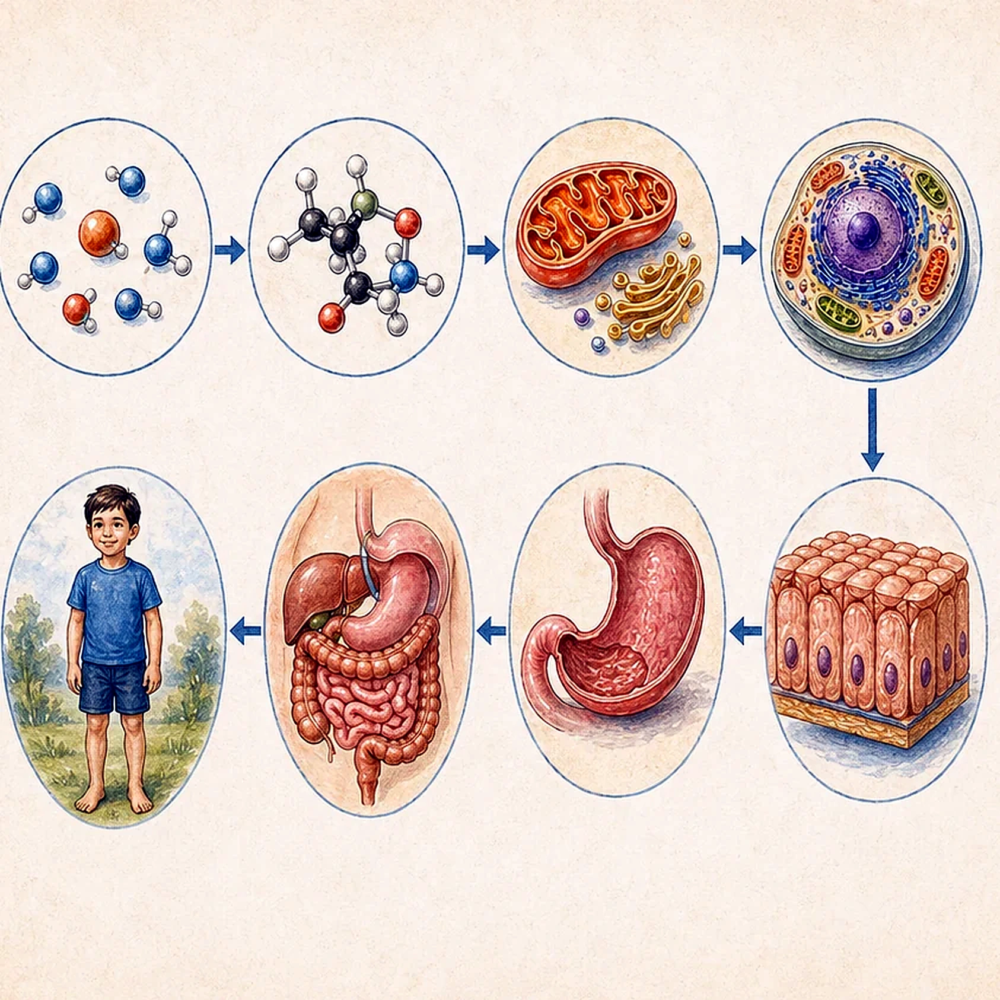
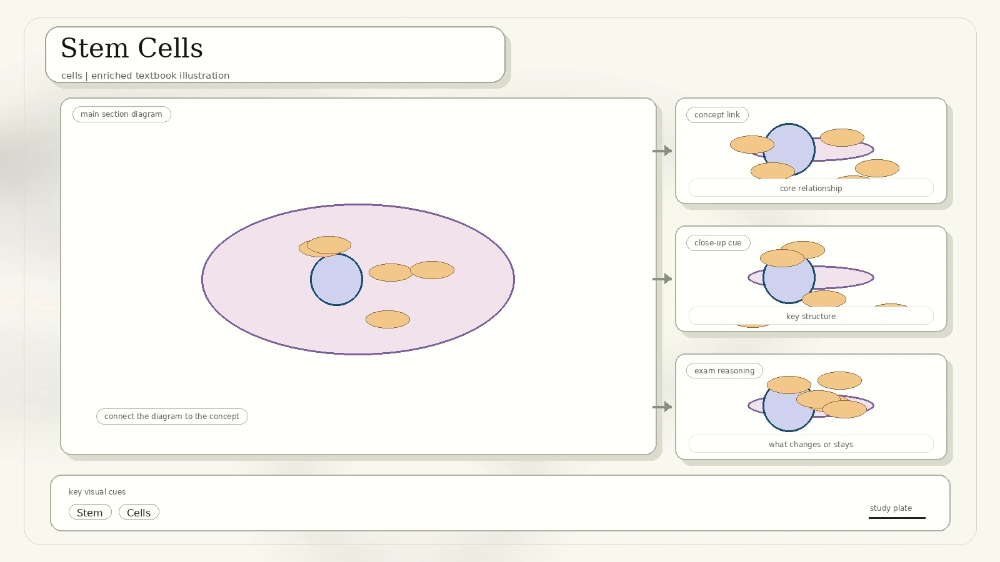

Cell Structure And Function
The lesson opens by noting that Robert Hooke introduced the term "cell" in 1667 after observing thin slices of cork under a microscope. Cells are the basic building blocks and units of life.

Chemical reactions continually occur inside cells to keep organisms alive.
They process materials to make new molecules for their own use or for transport to other body parts.
The nucleus contains hereditary material. DNA forms thread-like chromosomes and helps control cell activities.
Nucleus and division: the scan says the nucleus allows cells to undergo cell division. Cells divide to replace damaged or dead cells and to allow growth.
Prokaryotic And Eukaryotic Cells
Prokaryotic cells have no nucleus. Eukaryotic cells have a nucleus, a compartment containing hereditary material such as DNA.

| Feature | Prokaryotic Cells | Eukaryotic Cells |
|---|---|---|
| Nucleus | No true nucleus. | Nucleus present. |
| Typical organisms | Bacteria are prokaryotic and unicellular. | Animals, plants, fungi, and protists are eukaryotic. Yeast is unicellular eukaryotic; amoeba and euglena are unicellular protists. |
| Common shapes | Spherical, rod-shaped, and spiral bacteria. | Shapes vary greatly because eukaryotic cells can specialize. |
The scan names Streptococcus pneumoniae as a gram-positive bacterium that causes pneumonia.
The scan names Escherichia coli as a common gram-negative bacterium.
Gram staining is a rapid stain that can guide physicians toward appropriate antimicrobial treatment.
Cell Walls, Membranes, And Tonicity
The scan highlights cell walls across organisms, then focuses on the plasma membrane as a phospholipid bilayer with embedded proteins.

- The plasma membrane is made of a phospholipid bilayer.
- The bilayer has hydrophilic heads facing water and hydrophobic tails facing inward.
- Membrane proteins are embedded in the bilayer.
- The membrane is selectively permeable to ions and organic molecules.
| Solution Type | Animal Cell | Plant Cell |
|---|---|---|
| Hypotonic | Swells and may burst. | Becomes turgid because the cell wall resists bursting. |
| Isotonic | Normal shape. | Flaccid compared with a turgid plant cell. |
| Hypertonic | Shrivels. | Shrivels or plasmolyses as the membrane pulls away from the wall. |
Blood is isotonic. Normal saline is 0.9% NaCl, meaning 9.0 g per litre.
Typical Animal And Plant Cells
Both animal and plant cells contain cytoplasm, a cell membrane, a nucleus, mitochondria, ribosomes, endoplasmic reticulum, and Golgi apparatus. Plant cells also have a rigid cell wall, chloroplasts, and a large central vacuole.

| Feature | Animal Cell | Plant Cell |
|---|---|---|
| Size | About 10 to 30 micrometers. | About 10 to 100 micrometers. |
| Shape | Irregular; can change shape. | Rectangular and more rigid; shape is permanent. |
| Cell wall | Absent. | Present. |
| Chloroplast | Absent. | Present. |
| Nucleus | Often central. | Often pushed to the periphery in a mature cell. |
| Vacuole | Many small vacuoles. | Large central vacuole. |
| Lysosomes | Present. | Usually absent in the simplified table. |
| Centriole | Present. | Absent. |
| Plasmodesmata and glyoxysome | Absent. | Present. |
Organelles And Endosymbiosis
Organelles perform specific processes inside cells. The scan especially emphasizes the nucleus and nucleolus, mitochondria, chloroplasts, endoplasmic reticulum, ribosomes, and Golgi apparatus.

The nucleus is usually the largest organelle and contains DNA. The nucleolus is a dense structure inside the nucleus that helps make ribosomes.
Found in cytoplasm. They are the sites where most respiration occurs and release energy to support life processes.
Found in photosynthetic plant cells such as leaves. They contain chlorophyll, which traps light for photosynthesis.
A continuous membrane system of flattened sacs. It helps synthesize, fold, modify, and transport proteins.
Found in all living cells. They translate mRNA to form proteins. Some attach to rough ER; others are free in cytosol.
Synthesizes lipids, phospholipids, and steroids.
Packages proteins into membrane-bound vesicles before the vesicles are sorted to their destination.
Endosymbiotic theory: mitochondria and chloroplasts were once prokaryotic organisms. Evidence includes similar size to prokaryotic cells, division by binary fission, their own membranes, and their own circular DNA.
Specialized Cells And Their Functions
Specialized cells have structures that suit their jobs. The scan lists epithelial, endothelial, neural, blood, fibroblast, fat, muscle, reproductive, and plant transport cells.

Epithelial cells cover external surfaces and line internal cavities. Endothelial cells line internal blood vessels.
Blood contains red blood cells, white blood cells, and platelets. RBCs and platelets have no nucleus; WBCs have true nuclei and fight infection.
Fibroblasts make connective tissue that supports and protects organs. Fat cells store energy and provide insulation.
Very long cells that transmit electrical impulses and carry messages around the body.
Have a tail to swim toward the egg and carry half the normal amount of DNA.
Cells in the digestive system have microvilli to increase surface area for absorption.
| Plant Specialized Cell | Main Function |
|---|---|
| Root hair cells | Increase surface area for water and mineral absorption. |
| Mesophyll cells | Carry out photosynthesis in leaves. |
| Guard cells | Open and close stomata to regulate gas exchange and water loss. |
| Xylem cells | Transport water and mineral salts; lignin strengthens the hollow tubes. |
| Phloem cells | Transport sugars and other dissolved food substances. |
Organization Of Multicellular Organisms
Multicellular organisms use levels of organization. Cells form tissues, tissues form organs, organs form organ systems, and organ systems make organisms.

Organs are body parts found in multicellular organisms. They collectively form organ systems and perform specific life processes in the body. Examples include brain, heart, and lungs.
Organelles are microscopic structures inside cells, found in unicellular and multicellular life. They perform specific processes inside the cell. Examples include nucleus, mitochondria, and Golgi apparatus.
Good to know: the nucleus is the largest organelle in many cells. DNA is not an organelle; it is present inside an organelle called the nucleus.
Stem Cells
Stem cells can develop into different cell types during early life and growth. They also serve as a repair system, replenishing other cells.

Can form all body cells and extra-embryonic tissues.
Can form many body cell types from different tissue lineages.
Can form several related cell types, often within one tissue family.
Can produce one specialized cell type, while still self-renewing.
| Stem Cell Type | Scan Details | Study Note |
|---|---|---|
| Embryonic stem cells | Pluripotent cells from the inner cell mass of a blastocyst. Human embryos reach blastocyst stage 4-5 days after fertilization and contain about 50-150 cells. | Can divide and multiply endlessly; controversial because embryos must be destroyed to obtain the cells. |
| Adult stem cells | Mature stem cells that replenish blood, skin, gut, and some other tissues. | In some cases replace cells damaged by illness or injury, but have limited ability to become other cell types and to divide. |
| Induced pluripotent stem cells | iPSCs are pluripotent stem cells generated directly from somatic cells. | Shinya Yamanaka's lab showed in 2006 that four genes, Myc, Oct3/4, Sox2, and Klf4, can reprogram cells. Nobel Prize: 2012. |
iPSC technology can make skin, blood, or other adult cells behave more like embryonic stem cells. The scan notes uses in disease-in-a-dish modelling, therapy testing, transplantation, and medicine research.